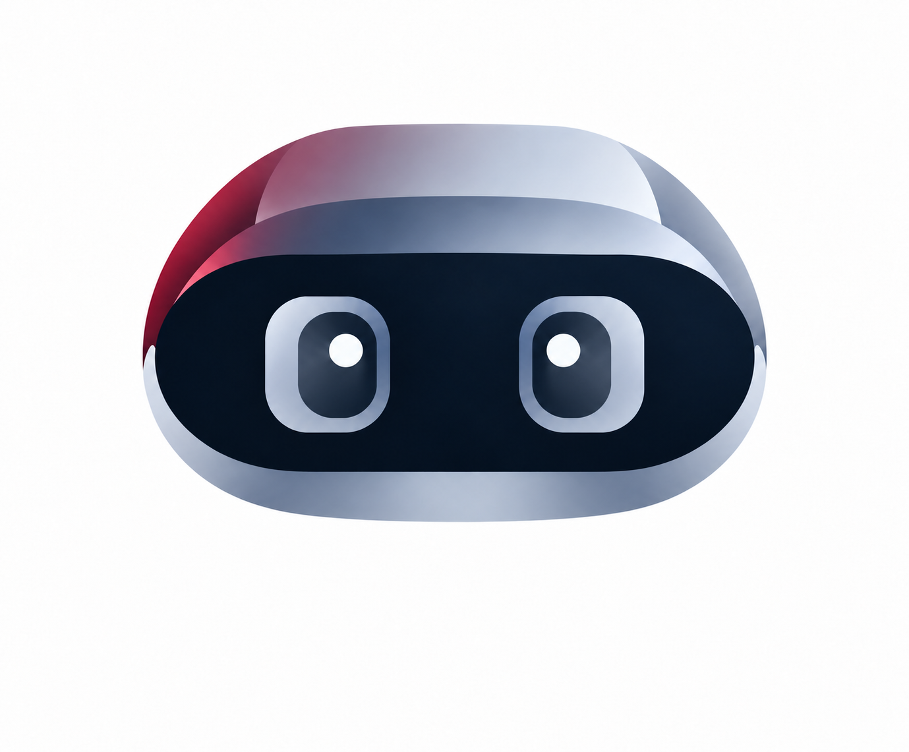

Exposed component updates
Infrastructure · 24 findings
16 / 24 resolved SecuRA
Let’s talk
SecuRA
Let’s talk

01 — THE SIGNAL BEYOND THE NOISE
Findings pile up. Priorities shift.
SecuRA connects evidence, people and deadlines in one workflow, from the first import to closure.
02 — THE OPERATIONAL VIEW
From the big picture to a single finding.
A dashboard to see where to act,
before you even open a detail.
Component update campaign: findings assigned to the Infrastructure team.
Import complete. Evidence updated and reappearing vulnerabilities detected.
| Finding / Asset | Severity | Status | Assignment |
|---|---|---|---|
| Exposed admin paneledge-gateway · 10.0.0.12 | Critical | In progress | Infrastructure |
| Application library needs updatingapp-server-02 · 10.0.1.24 | High | Assigned | Application |
| Outdated TLS configurationproxy-01 · 10.0.0.18 | Medium | Pending | Network |
| Outdated system componentworker-03 · 10.0.2.31 | High | Unassigned | — |
Status, asset, owner, notes and evidence stay connected throughout the remediation lifecycle.
Infrastructure · 24 findings
16 / 24 resolvedNetwork · 18 findings
11 / 18 resolvedApplication · 32 findings
19 / 32 resolvedGroup vulnerabilities into campaigns and track remediation progress.
INTERFACE RECREATED FOR ILLUSTRATIONSensitive information stays in your environment. This is just a preview.
03 — FROM FINDING TO CLOSURE
One continuous flow to turn
a report into assigned work,
and work into traceable evidence.
Import Excel reports, link findings to assets and identify previously resolved vulnerabilities that reappear in new reports.
Assign owners, organise campaigns and track deadlines. Critical issues and overdue SLAs stay visible to the team.
Support resolution with notes, evidence and operational tools. Keep a history of assignments, activities and status changes.
04 — YOUR PERIMETER
SecuRA is self-hosted. The application and operational data live on infrastructure managed by your organisation.
Let’s talk about your environmentSecuRA05 — INSIDE THE PLATFORM
A shared operational foundation.
The tools to go deeper.
KPIs, severity, urgent deadlines, workload distribution and recent activity. A shared view of progress.
Assets, campaigns, commands, the knowledge base, Remote Ops and Ansible support your vulnerability management workflow.
Assignments, notes, evidence and audit logs make the remediation journey available for review and tracking over time.
SecuRA manages findings and remediation based on imported evidence. The robot and visual scan illustrate this operational visibility; they do not replace the scanners your team already uses.
You can explore the three illustrative views above. All data is demonstrative: this static showcase does not connect to a real environment, execute operations or provide application access.
SecuRA is deployed as a self-hosted application and can run in containers on your organisation’s infrastructure. Installation, access and configuration are managed within your own environment.
FROM VISIBILITY TO ACTION